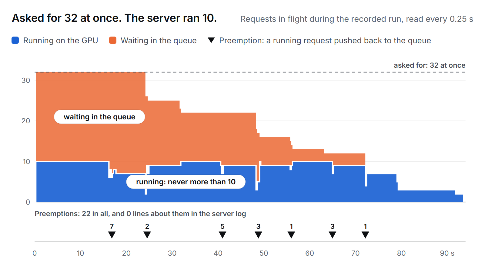

Around a vLLM benchmark it reads the server's boot log and counters, measures achieved concurrency, preemptions, KV-cache use, GPU state and timing, and checks the run for 15 known problems. It works with the load tool you already use.

# install pipx install inferlint # start the server, record it while the benchmark runs, check it, stop it inferlint xray -o run/ --serve "vllm serve MODEL" -- vllm bench serve --model MODEL --max-concurrency 32 ...
== is the GPU free? [ T2] PASS 2 consecutive clear readings == start the server (output in run/boot.log) == boot log [T12] PASS no failure in log [ T5] WARN attention block size forced to 784 tokens (requested 16); each request's KV is allocated in 784-token units [ T6] PASS nothing to check: the server was started without --attention-backend, so vLLM chose its own (FLASH_ATTN) and nothing could be ignored; there was no draft model either == probe: one request, then 8 at once [ T7] PASS 1 + 8 concurrent requests served, server alive == load: vllm bench serve --model MODEL ... --max-concurrency 32 --save-result --result-dir run --result-filename bench.json … the benchmark's own output == checks [ T1] TRIPWIRE-FAILED 21 preemptions during the run [T10] PASS 314.99 tokens/s over 101.590s; an integer-second timer would say 313.73 (-0.40%) [T14] PASS gauge denominator is 42 = num_gpu_blocks (43) - 1 null block [ T9] WARN ceiling moved between 5 and 10 as requests grew (one request held 9.5% to 19.0% of the cache); concurrency was not a constant of this run [ T8] TRIPWIRE-FAILED requested 32 concurrent, server never ran more than 10 [T15] PASS client and server agree: 32 requests, 32,000 output tokens == stop the server [ T2] PASS 2 consecutive clear readings 12 checks (8 pass, 2 warn, 2 tripwire-failed) report: run/report.html files: run
A second run of the same test on vLLM 0.28, with paths and the load command shortened. Tested on vLLM 0.28, 0.29 and 0.30. No GPU at hand? The tutorial runs every check on the recorded files in two minutes.